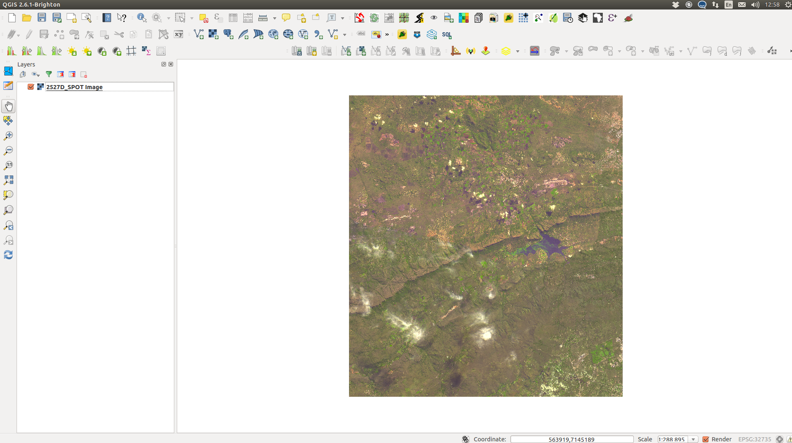
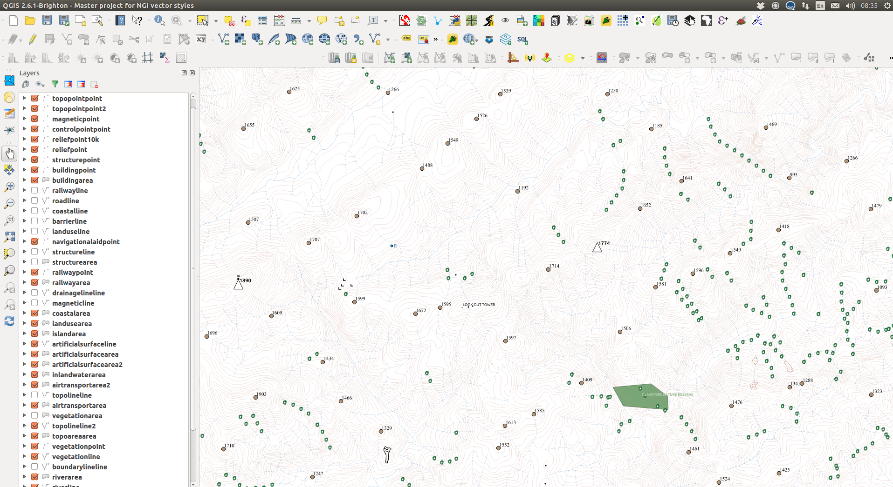
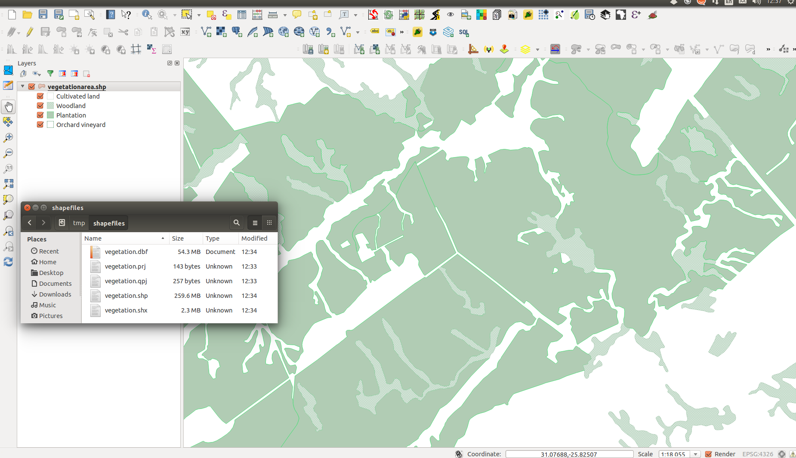

Spatial data is stored and managed in various formats. Nowadays, most GIS software can read and write most of these formats. Some formats are software-specific and some formats are open and standard.
| Raster data | Vector data | Binary files |
|---|---|---|
Common, open formats include
|
GML or Geography Markup Language is an international standard and is the South African Government’s official format for vector GIS data. | There are many formats but the most common file format for GIS data is the ‘shapefile’. |
|  |  |  |
Spatial databases such as ‘Spatialite’ or ‘PostGIS’ are where GIS professionals and large organisations store and manage their GIS data. A spatial database treats spatial and non-spatial data in the same way and stores them together.